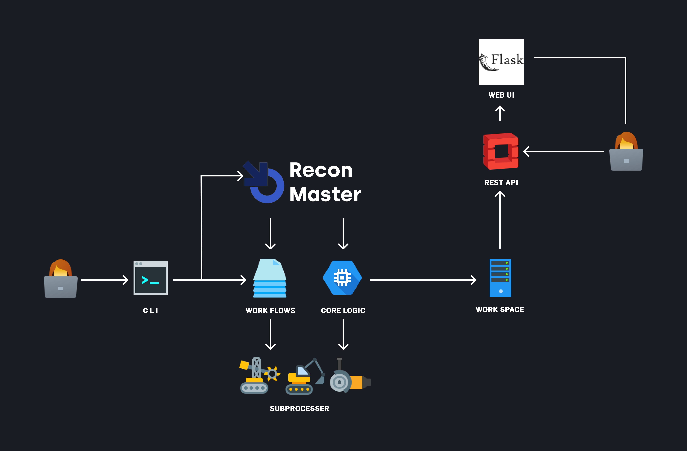

ReconMaster is a Reconnamace enumeration tool. it will automate the gathering, analyzing, and representing information based on the target. generally, for each task, we have to run multiple tools and scripts manually, this tool will reduce all manual work, also make it efficient. These tools will also find bugs based on information gathered. This tool includes many modules on which a user can get information, some of them are as follows subdomain, Dorking, directory enum, port scanning, acquisition, subdomain takeovers, etc. the main motive of the tool is to reduce time and efforts of the pentesters and give full pakage of tools at one place.
